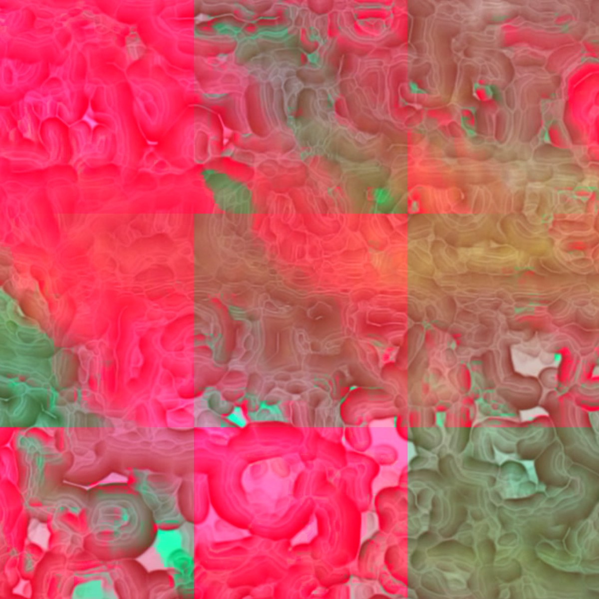

Bloom’s Village
Three experimental electronic tracks from Manchester artist Will Holton, working as Bloom’s Village: Flippin, Spinning Rhythms and Got My Mind.
-
01 Flippin0:00 / 0:15
-
02 Spinning Rhythms0:00 / 0:15
-
03 Got My Mind0:00 / 0:15